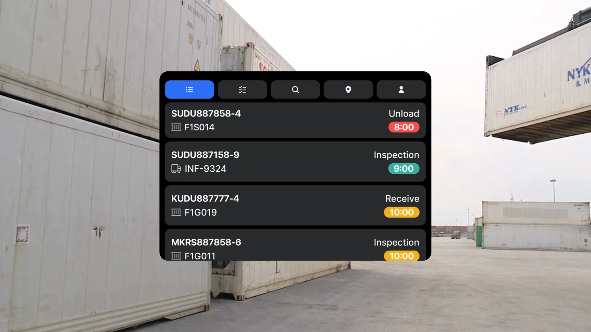
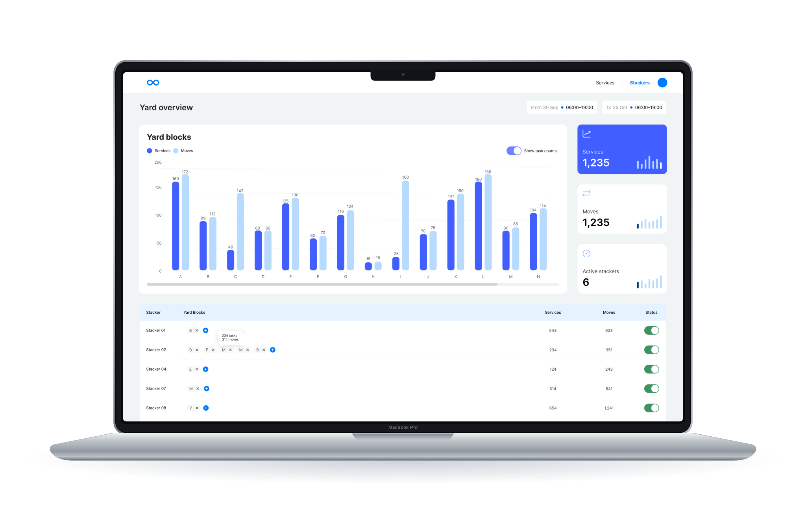
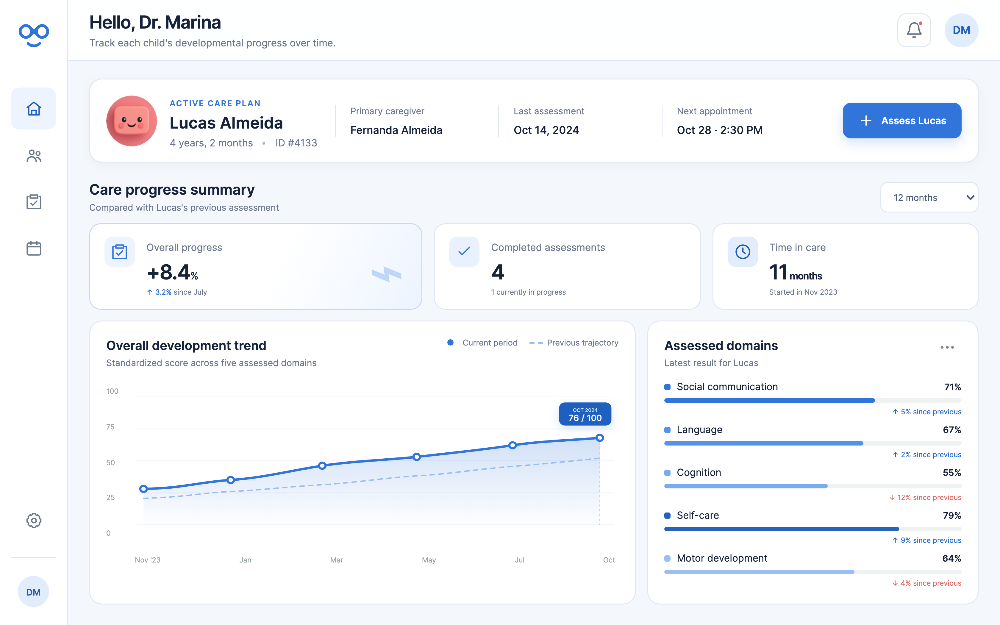
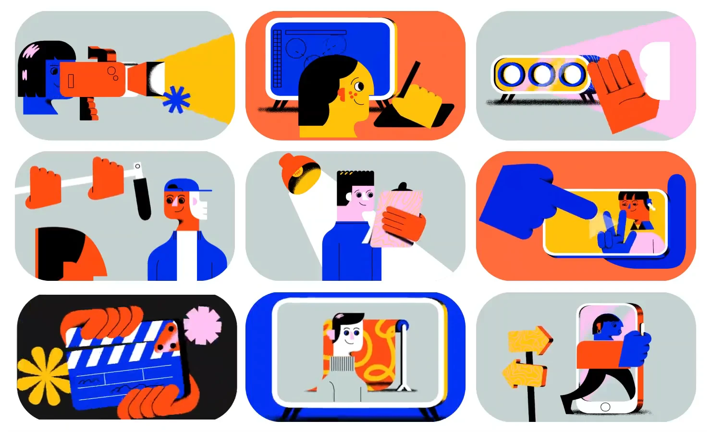

Brenda Linck
“The purpose of computers is human freedom.”
I shape product direction, prototype with AI, and build alongside engineers. From early exploration to launch, I turn what technology makes possible into experiences people can understand, trust, and use.
View résuméSelected work
Research, product & interaction
Loopt Yard · Operators
Bringing order to the container yard
Turning changing instructions, container positions, and complex port operations into clear next steps for operators.
Sole designer · Research, interaction & interface design
Built from scratch. In daily use since 2023.
Find Your Nutritionist · Healthcare
Breaking the conversion block
Understanding why people browse nutritionists but leave before booking, then redesigning the journey around their needs.
Research & design lead · Mobile experience
Research informed by 285 survey participants.

Leap / SAP Brazil · Learning
A career worth exploring
Making career development feel like an explorable world, with game-inspired interactions and different ways to find a path.
Solo designer · Research & interaction design
Three career tracks, shaped through five testing rounds.
Dietbox · Student Plan
Making the case for fewer features
Research that challenged a brief for more features and redirected the student experience toward the activities that mattered most.
Research lead · Discovery & product direction
30 survey responses, 100 profiles reviewed, 5 student interviews.


ROLE · Local discovery
Your city. Your next night out.
Discovering concerts, events and parties in Porto Alegre through a mobile experience that brings the city’s cultural life together.
UX/UI Designer · Mobile app
From event discovery to deciding where to go.

SmartYard / Loopt · Planning
The bigger picture
behind every move
Giving port planners a shared view of operations, from individual container movements to the decisions that shape the entire yard.
Staff UX Designer · Data, workflows & design systems
One design system across planning and operator tools.

Millie · Healthcare startup
A clearer picture of every child’s care
Product design for Millie, connecting child profiles, developmental assessments, and follow-up in one clinical workspace.
Product & interaction design · Startup collaboration
Motion & visual craft

Bonde · Creative production
Alive and on brand
Bringing an illustrated identity to life through custom animations prepared for interaction and implementation on the web.
Motion design · After Effects
95 animations delivered in two weeks.
Fiero · Competition & challenges
Every point has a little personality
Giving scores and friendly competition an expressive interface, with animation and small moments of feedback.
Interface design · Animation & microinteractions
Hello!
I'm Brenda, a product designer interested in how people think, what they need, and how design can help. My work spans different industries and formats, from digital products to motion and visual storytelling.
I like moving between the big picture and the small details: listening, making connections, trying things out, and refining them with a team. Research gives me direction; experimentation helps me see what else is possible. I also enjoy sharing what I learn through workshops and mentoring.
Communicating freely in Portuguese and English.
Surviving in French, German and Spanish.